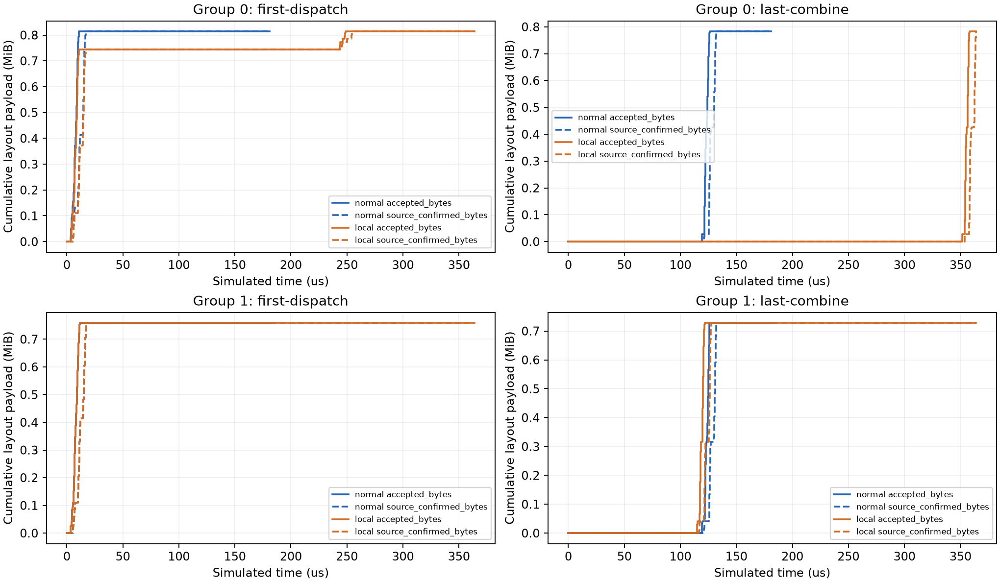

两个EP64组共用一次Clos网络。15份不同真实专家选择，各层400G、每链路1us，SR和参考DCQCN固定。 本轮按目的卡去重并卡内合并；每条件12,729,024B布局载荷，保留480专家贡献。
normal无故障；local仅在GPU20前100us丢弃目的数据，保留控制包。这是局部接收故障，不是物理上行失效。
| 条件 | 有限任务/μs | 组0/μs | 组1/μs | 网络排空/μs |
|---|---|---|---|---|
| normal | 132.159 | 132.159 | 132.013 | 180.957 |
| local | 363.964 | 363.964 | 127.705 | 363.964 |
整段增加231.805μs；健康组更早，变化-4.308μs。故障代价不是承诺的优化收益。
首Dispatch释放：16.922→254.594μs。 故障条件有63个rank在门限等待，中位247.256μs。 该阶段之后的时间差变化-5.867μs；不能把继承偏移再算一遍。
| 并列最后确认消息 | 源→目标 | 超时恢复请求 | 故障后下一实际TX/ns | 接收完成/ns | 源确认/ns |
|---|---|---|---|---|---|
| 3538 | 112→20 | 2 | 241392 | 248588 | 254594 |
表中重试数是恢复请求；实际源数据包另核对。故障结束后的间隔是既有定时器行为，不是已证明可消除的损失。

实线接受、虚线源确认；蓝色正常、橙色故障。曲线含布局元数据/填充。健康组未直接丢包；实际共享出口和逐跳停留见核验，但不把累计排队当业务时延。
当前输入稀疏：128端点中117个rank有数据，15真实来源请求，两个EP组8/7请求。 结果不足以将恢复对其他组的拖累作为当然前提。应先补代表性并发、故障可观测性或共享瓶颈证据，再选择优化，不能靠缩RTO/加故障制造收益。
真实的是专家选择。没有GPU运行、完整R1、Prefill或硬件校准；direct BF16和零协调成本门限仍不含完整GIN/CQ/GPU可见性与hybrid。